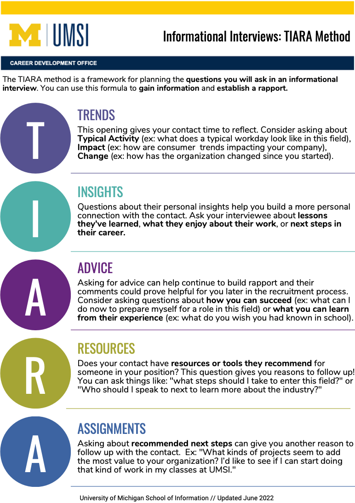

Why Networking Matters for UMSI Students
Networking is more than exchanging LinkedIn connections—it's about building meaningful, long-term relationships that can open doors to new opportunities. For UMSI students, developing your professional network provides access to insider knowledge, mentorship, and career paths you might not discover otherwise.
Benefits of Strategic Networking:
- Access to unadvertised job opportunities
- Industry insights and career advice
- Professional mentorship relationships
- Enhanced job search effectiveness
- Long-term career development support
Getting Started with Networking
If you're new to professional networking, begin with these fundamental resources:
Networking Foundations
- Intro to Making Connections Workshop slides covering networking basics and strategies
- Building a List for Strategic Networking Handout on identifying and prioritizing potential contacts
Outreach Messages & Communications
Effective outreach is key to successful networking. These resources will help you craft professional communications:
Email Templates & Examples
-
Networking Outreach Email Examples
CDO-approved templates for various networking scenarios
-
Networking Email Templates from Resume Worded
Professionally crafted email templates for different purposes
Professional Communication Tools
Video tutorial on U-M's tool for writing professional communications
How to use the Lettersmith tool effectively
Informational Interviews
Informational interviews are valuable opportunities to learn from professionals in your field of interest:
The TIARA Method Framework
TIARA provides a structure for planning effective questions during informational interviews:
- T - Trends
- Ask about industry trends, typical activities, and changes in the field
- I - Insights
- Request personal insights about their career journey and lessons learned
- A - Advice
- Seek advice for someone in your position entering the field
- R - Resources
- Ask about recommended resources, tools, or people to connect with
- A - Assignments
- Inquire about recommended next steps or projects to build relevant experience
- Informational Interviews Using TIARA Workshop slides with detailed guidance on conducting informational interviews
Strategic Networking Planning
Develop a comprehensive networking strategy with these resources:
Networking Plans & Platforms
-
University Career Alumni Networking (UCAN) Platform
Connect with U-M alumni mentors in your field of interest
-
AI Prompt Resource Guide: Networking
Use AI tools to enhance your networking strategy and communications
-
Elevator Pitch Rubric
Evaluate and improve your professional introduction
Event Networking
Maximize your networking at career fairs, conferences, and professional events:
Career Fair Preparation
- 2024 Career Fair Prep Workshop Slides Comprehensive guide to preparing for career fairs
- 2024 Career Fair Prep Workshop Recording Watch the full career fair preparation workshop
Conference Networking
- Conference Prep Workshop Slides Strategies for maximizing your conference experience
- Conference Preparation Template Plan and track your conference activities and contacts
Networking FAQ
Common questions about networking from UMSI students:
- Do I need to be extroverted to network successfully?
- Not at all. Effective networking is about genuine curiosity and listening. Many successful networkers are introverts who prepare questions in advance and focus on one-on-one conversations rather than large groups.
- How do I follow up after meeting someone?
- Send a personalized thank-you message within 24-48 hours. Reference something specific from your conversation, and suggest a clear next step if appropriate.
- Can I network with people I don't know?
- Yes! Professionals often appreciate hearing from students. Be respectful of their time, clearly state your purpose, and mention any common connections or interests.
- How often should I be networking?
- Make networking a consistent practice rather than something you only do when job searching. Aim to make 1-2 new connections each month throughout your time at UMSI.
- What if someone doesn't respond to my outreach?
- Don't take it personally. People are busy. Follow up once after 1-2 weeks, but if you don't hear back, move on to other contacts.
Additional Support
For personalized networking guidance, consider these UMSI resources:
- Schedule a one-on-one appointment with a CDO career coach
- Attend upcoming networking workshops and events